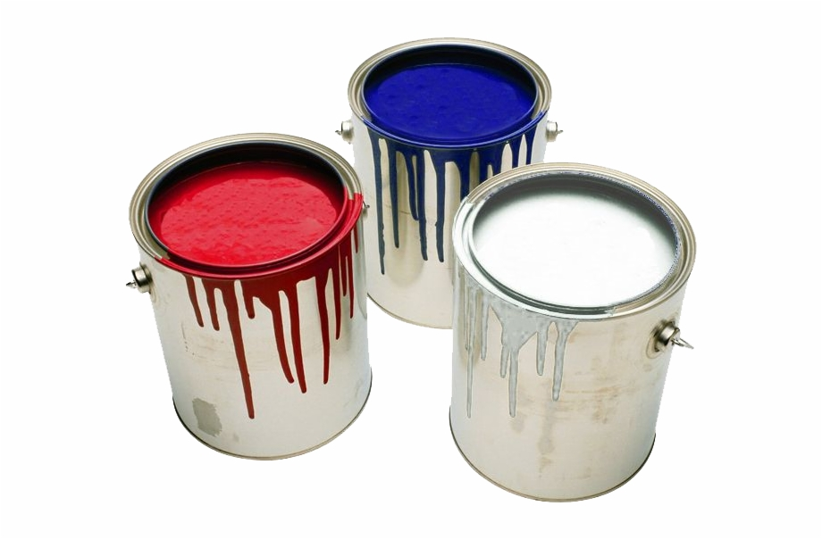

Make Your Own Color
21.12 memudahkanmu untuk mendapatkan warna yang kamu suka.
Cat 21.12 membuat hidupmu lebih berwarna. Memiliki pilihan warna yang sangat banyak, cat 21.12, akan membuat rumah impianmu menjadi kenyataan.
Gunakan 3 slider di bawah (Red, Green, dan Blue) untuk mendapatkan warna yang kamu inginkan. Hasilnya dapat kamu lihat pada lingkaran.
Red
Green
Blue
Dapatkan 1 kaleng cat gratis untuk setiap pemesanan menggunakan 'Make Your Own Color'.
Paint Your Love
21.12 menyediakan pilihan warna dasar yang membuat rumahmu semakin indah.
Dengan menggunakan teknologi mutakhir, 21.12 juga melindungi rumahmu dari air dengan bahan anti airnya. Jadi, kamu tidak perlu lagi menggunakan anti air lain sebelum mengecat rumahmu. Gunakan cat 21.12 lebih praktis dan mudah.

Jadi, kenapa harus pilih yang lain. Gunakanlah cat 21.12 untuk membuat rumahmu menjadi aman dan indah.